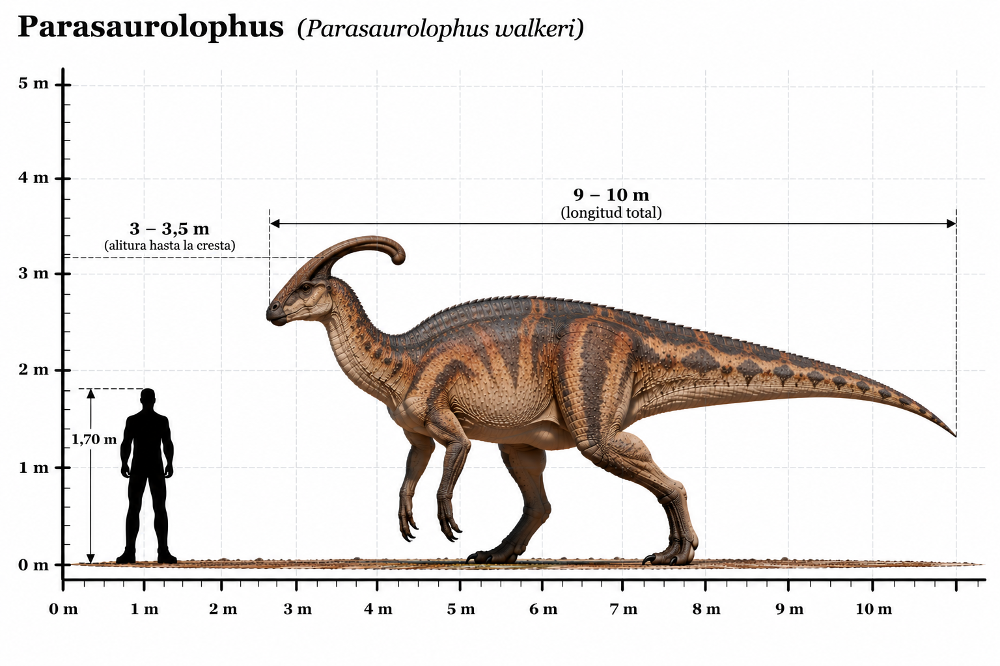

Parasaurolophus walkeri

El Parasaurolophus walkeri fue un dinosaurio herbívoro perteneciente al grupo de los hadrosáuridos, conocidos popularmente como dinosaurios de pico de pato. Habitó América del Norte durante el Cretácico tardío, hace aproximadamente 76 millones de años. Su característica más distintiva era una larga cresta ósea que sobresalía hacia atrás desde la parte superior de su cráneo. Esta cresta contenía conductos internos conectados con las vías respiratorias. Los científicos consideran que pudo utilizarse para producir sonidos de baja frecuencia, facilitando la comunicación entre individuos. También pudo desempeñar funciones relacionadas con la exhibición visual y el reconocimiento entre miembros de la misma especie. Poseía un cuerpo robusto, una cola larga y extremidades posteriores más desarrolladas que las delanteras. Podía desplazarse sobre dos o cuatro patas, dependiendo de la actividad que realizara. Su pico córneo y sus numerosas baterías dentales estaban adaptados para cortar y triturar grandes cantidades de vegetación. Los fósiles indican que vivía en ecosistemas con ríos, llanuras de inundación y abundante vegetación.
- Grupo: Ornitópodo (hadrosáurido).
- Familia: Hadrosauridae (hadrosáuridos).
- Subfamilia: Lambeosaurinae (lambeosaurinos).
- Período: Cretácico tardío (hace aproximadamente 76 millones de años).
- Alimentación: Herbívoro.
- Longitud: Aproximadamente 9–10 metros.
- Altura: Aproximadamente 2,5–3 metros hasta la cadera.
- Localización: América del Norte (actuales Canadá y Estados Unidos).
